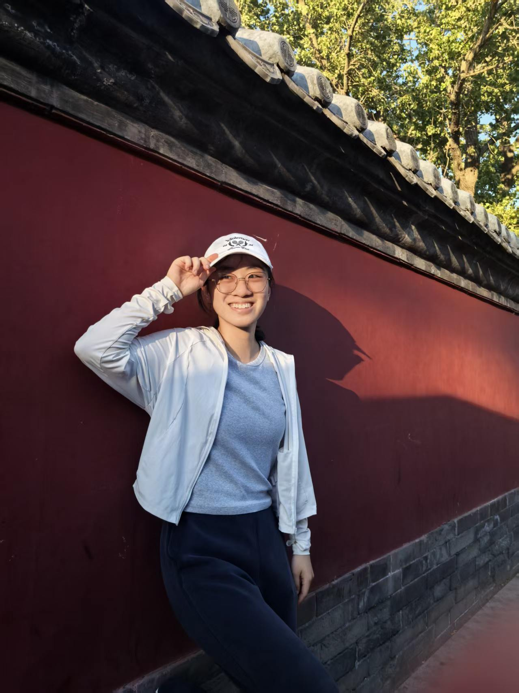

Siqi Liu

My research interests: Neural Circuit | Brain Computer Interface | AI for science | Biotechnology | Network Neuroscience
Hi! I am a U2 neuroscience undergraduate student at McGill University.
I quite enjoy exploring stuff on my own, whether it’s for academics or purely out of interest. I picked my bachelor's path to be neuroscience because I
love its interdisciplinary nature: research (at the Poulin lab) has been a part of my undergraduate journey consistently, and I believe that viewing concepts from multiple different
perspectives/subjects could give one unique inspiration. I often picture the human brain as a miniature of the real universe out there, with intertwined neural networks as galaxies;
we are actively exploring both the inner and outer sides of the world to truly know who we are.
Beyond university’s coursework, I’ve also explored concepts that I’m interested in, from the Neuromatch Academy and open-sourced courses offered by MIT. Over the summer of 2026,
I finished an independent project about mapping brain activation and representation with fMRI, under the guidance of Neuromatch Academy.
Through the MITx 6.86x course, I developed a rigorous foundation in statistical learning, including classification, generalization, regression, collaborative filtering (Gaussian mixtures),
clustering, and machine learning architectures such as CNN, RNN, reinforcement learning, generative models, and NLP applications. Moreover, through the MITx 6.419x course, I got to learn and
practice the pipeline of data analysis by applying the concepts over topics such as high-dimensional genomics data and criminal networks. The core statistical tools
I applied are dimension reduction techniques, clustering, classification, as well as centrality measures.
Beside studying and researching, I enjoy playing badminton and tennis, drawing (digitally and physically) as well as travelling.